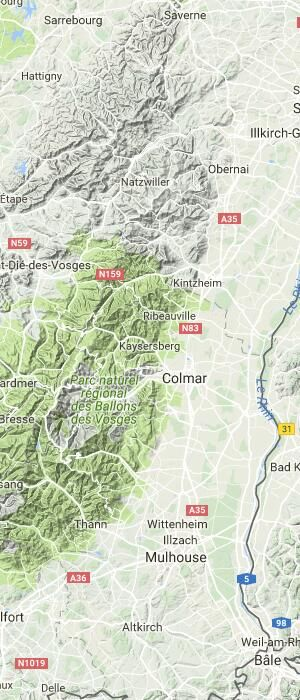

topography noun
/təˈpäɡrəfē/
the arrangement of the natural and artificial physical features of an area.
Welcome to your topo map. Here you'll see all the species you've found represented by a small thumbnail image pinned to maps. To remove a species from your map, you'll find a `Trash` button inside of each expandable species card found in your basket. Click on a thumbnail image to see detialed information about where and when you found it as well as info about the species itself. Happy hunting!
